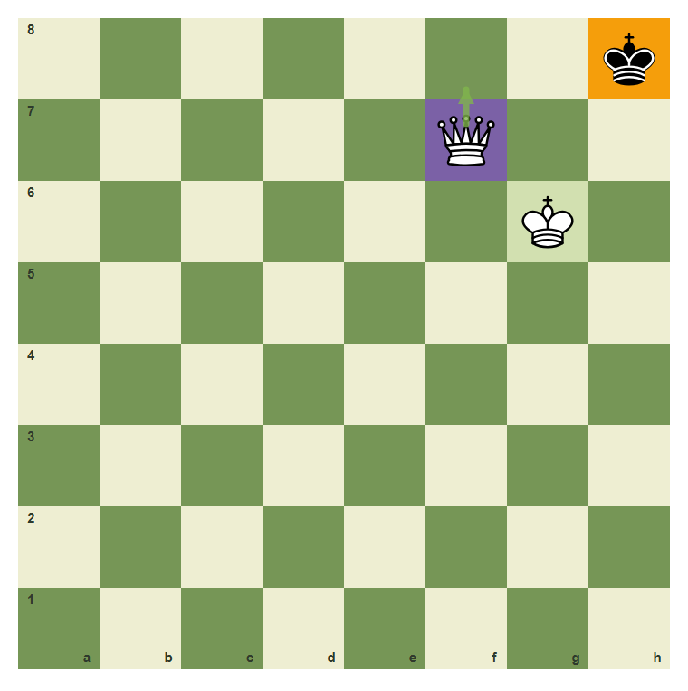
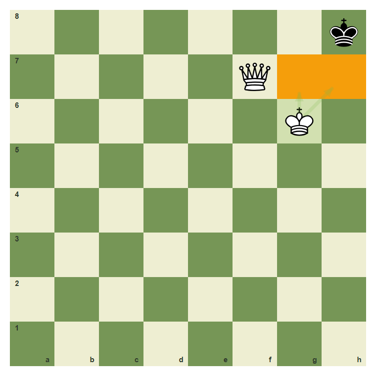
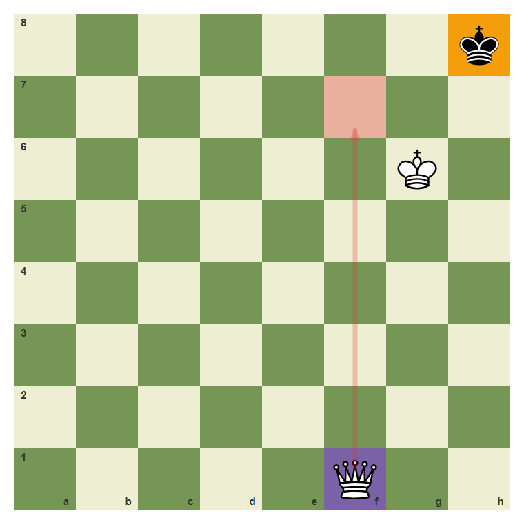
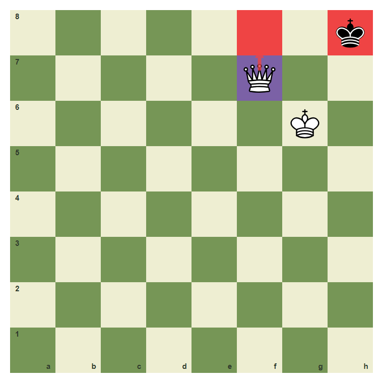
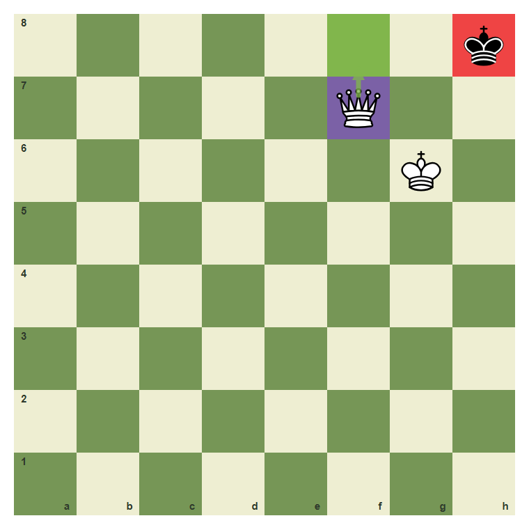

Avoiding Stalemate
Do not turn a win into a draw.
- Recognize stalemate danger.
- Prefer checking moves in winning king hunts.
- Leave the defender legal moves until mate is ready.
Winning Still Needs Care
Stalemate happens when the side to move has no legal move but is not in check. Beginners often stalemate with a queen because they take every escape square without giving check.
The danger around h8

The black king has very little room. White must use checks carefully.
Give a checking move

Queen f8 gives check instead of merely taking squares.
The king controls escape squares

The white king on g6 controls h7 and g7.
A quiet squeeze can stalemate

If you only take squares and do not check, you may give the defender no legal move.
The survival rule: check before the box closes

When the enemy king is trapped, choose a move that gives check.
Avoid stalemate with check
Move the queen from f7 to f8.

Common mistake: squeeze without check
A quiet queen move can remove all moves without checking. In a won ending, ask if the defender is in check.

The wrong arrow shows a queen move that focuses only on the box.
Chapter Checkpoint
Stalemate is:
Stalemate is:
Near a trapped king, prefer moves that:
Near a trapped king, prefer moves that:
Stalemate makes a won game become:
Stalemate makes a won game become: